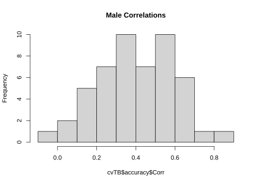

Male Prediction WIP
Last updated: 2023-01-22
Checks: 7 0
Knit directory: dgrp-starve/
This reproducible R Markdown analysis was created with workflowr (version 1.7.0). The Checks tab describes the reproducibility checks that were applied when the results were created. The Past versions tab lists the development history.
Great! Since the R Markdown file has been committed to the Git repository, you know the exact version of the code that produced these results.
Great job! The global environment was empty. Objects defined in the global environment can affect the analysis in your R Markdown file in unknown ways. For reproduciblity it’s best to always run the code in an empty environment.
The command set.seed(20221101) was run prior to running
the code in the R Markdown file. Setting a seed ensures that any results
that rely on randomness, e.g. subsampling or permutations, are
reproducible.
Great job! Recording the operating system, R version, and package versions is critical for reproducibility.
Nice! There were no cached chunks for this analysis, so you can be confident that you successfully produced the results during this run.
Great job! Using relative paths to the files within your workflowr project makes it easier to run your code on other machines.
Great! You are using Git for version control. Tracking code development and connecting the code version to the results is critical for reproducibility.
The results in this page were generated with repository version a65dfd2. See the Past versions tab to see a history of the changes made to the R Markdown and HTML files.
Note that you need to be careful to ensure that all relevant files for
the analysis have been committed to Git prior to generating the results
(you can use wflow_publish or
wflow_git_commit). workflowr only checks the R Markdown
file, but you know if there are other scripts or data files that it
depends on. Below is the status of the Git repository when the results
were generated:
Ignored files:
Ignored: .RData
Untracked files:
Untracked: analysis/linearReg.Rmd
Untracked: code/aaaTest
Untracked: code/analysisSR.R
Untracked: code/geneGO.R
Untracked: code/multiPrep.R
Untracked: code/regress.81916.err
Untracked: code/regress.81916.out
Untracked: code/regress.81918.err
Untracked: code/regress.81918.out
Untracked: code/regress.R
Untracked: code/regress.sbatch
Untracked: code/regressF.81919.err
Untracked: code/regressF.81919.out
Untracked: code/regressF.R
Untracked: code/regressF.sbatch
Untracked: code/regress_f_adj.109973.err
Untracked: code/regress_f_adj.109973.out
Untracked: code/regress_f_adj.109974.err
Untracked: code/regress_f_adj.109974.out
Untracked: code/regress_f_adj.R
Untracked: code/regress_f_adj.sbatch
Untracked: code/regress_m_adj.109971.err
Untracked: code/regress_m_adj.109971.out
Untracked: code/regress_m_adj.109972.err
Untracked: code/regress_m_adj.109972.out
Untracked: code/regress_m_adj.R
Untracked: code/regress_m_adj.sbatch
Untracked: code/snpGene.77509.err
Untracked: code/snpGene.77509.out
Untracked: code/snpGene.77515.err
Untracked: code/snpGene.77515.out
Untracked: code/snpGene.sbatch
Untracked: data/eQTL_traits_females.csv
Untracked: data/eQTL_traits_males.csv
Untracked: data/fMeans.txt
Untracked: data/fRegress.txt
Untracked: data/fRegress_adj.txt
Untracked: data/f_adj.txt
Untracked: data/goGroups.txt
Untracked: data/mMeans.txt
Untracked: data/mPart.txt
Untracked: data/mRegress.txt
Untracked: data/mRegress_adj.txt
Untracked: data/m_adj.txt
Untracked: data/multiReg.rData
Untracked: data/starve-f.txt
Untracked: data/starve-m.txt
Untracked: data/xp-f.txt
Untracked: data/xp-m.txt
Untracked: data/y_save.txt
Untracked: figure/
Untracked: lmm.R
Untracked: qqdum.R
Untracked: scoreAnalysisMulticomp.R
Untracked: temp.Rmd
Note that any generated files, e.g. HTML, png, CSS, etc., are not included in this status report because it is ok for generated content to have uncommitted changes.
These are the previous versions of the repository in which changes were
made to the R Markdown (analysis/rewrite.Rmd) and HTML
(docs/rewrite.html) files. If you’ve configured a remote
Git repository (see ?wflow_git_remote), click on the
hyperlinks in the table below to view the files as they were in that
past version.
| File | Version | Author | Date | Message |
|---|---|---|---|---|
| Rmd | a65dfd2 | nklimko | 2023-01-22 | secretariat shutdown files |
Female Data
#wolb infection and inversion status data with phenotype adjustment function
load("/data/morgante_lab/data/dgrp/misc/adjustData.RData")
#read in expression data
fMeans <- fread("data/fMeans.txt")
#create matrix of only gene expression, trims line and starvation
X <- as.matrix(fMeans[,3:11340])
rownames(X) <- fMeans[,line]
#extract and adjust phenotype(starvation)
y <- fMeans[,starvation]
dat <- data.frame(id=fMeans[,line], y=y)
y_adj <- adjustPheno(dat, "starvation")
#scale matrix and compute TRM using crossproduct and number of markers(genes)
W <- scale(X)
TRM <- tcrossprod(W)/ncol(W)
#convert TRM structure to list
listTRM <- list(A=TRM)
#model to solve for, vector of ones
mu <- matrix(rep(1, length(y_adj)), ncol=1)
# REML analyses
fitG <- greml(y = y_adj, X = mu, GRM = listTRM, verbose = TRUE)
# Create marker sets
#setsTB <- list(A = colnames(X)) # gblup model
# grm computes crossproduct
#TB <- lapply(setsTB, function(x) {grm(W = X[, x])})
# k-fold parameters
n <- length(y_adj)
fold <- 10
nvalid <- 50
#validate sets
validate <- replicate(nvalid, sample(1:n, as.integer(n / fold)))
#cross-validation greml
cvTB <- greml(y = y_adj, X = mu, GRM = listTRM, validate = validate, verbose=FALSE)
hist(cvTB$accuracy$Corr, main = "Female Correlations")
statTemp <- glma(fit = fitG, W = W)
#summary(cvTB$accuracy$Corr)
par(mfrow=c(1,2))
hist(statTemp[,1], main="Female Coefficients")
qq(statTemp[,4], main="Female Gene p-values")
statF <- statTemp
summary(statF)Male Data
rm(list=ls())
#wolb infection and inversion status data with phenotype adjustment function
load("/data/morgante_lab/data/dgrp/misc/adjustData.RData")
#read in expression data
mMeans <- fread("data/mMeans.txt")
#create matrix of only gene expression, trims line and starvation
X <- as.matrix(mMeans[,3:11340])
rownames(X) <- mMeans[,line]
#extract and adjust phenotype(starvation)
y <- mMeans[,starvation]
dat <- data.frame(id=mMeans[,line], y=y)
y_adj <- adjustPheno(dat, "starvation")Type III ANOVA table for covariates: starvation
Df Sum of Sq RSS AIC F value Pr(>F)
<none> 15975 893.32
factor(wolba) 1 3.041 15978 891.35 0.0354 0.8509
factor(In_2L_t) 2 299.141 16274 892.99 1.7415 0.1781
factor(In_2R_NS) 2 243.044 16218 892.31 1.4149 0.2455
factor(In_3R_P) 2 230.105 16205 892.15 1.3396 0.2645
factor(In_3R_K) 2 288.050 16263 892.85 1.6770 0.1898
factor(In_3R_Mo) 2 207.445 16182 891.87 1.2077 0.3012
Estimated effects
Estimate Std. Error t value Pr(>|t|)
(Intercept) 45.6614374 1.157976 39.4321227 2.909220e-92
factor(wolba)y -0.2574606 1.368248 -0.1881681 8.509500e-01
factor(In_2L_t)1 1.7198329 2.311372 0.7440744 4.577704e-01
factor(In_2L_t)2 -3.7780449 2.348592 -1.6086422 1.093906e-01
factor(In_2R_NS)1 -1.0811449 3.443957 -0.3139252 7.539297e-01
factor(In_2R_NS)2 5.8594026 3.595753 1.6295343 1.048923e-01
factor(In_3R_P)1 -2.0731924 3.879580 -0.5343858 5.937128e-01
factor(In_3R_P)2 7.1994131 4.718118 1.5259077 1.287315e-01
factor(In_3R_K)1 5.3513957 3.043456 1.7583284 8.033635e-02
factor(In_3R_K)2 3.7673764 6.668091 0.5649857 5.727643e-01
factor(In_3R_Mo)1 -3.0569154 3.189101 -0.9585510 3.390293e-01
factor(In_3R_Mo)2 -3.0977753 2.402719 -1.2892793 1.989020e-01#scale matrix and compute TRM using crossproduct and number of markers(genes)
W <- scale(X)
TRM <- tcrossprod(W)/ncol(W)
listTRM <- list(A=TRM)
#model to solve for, vector of ones
mu <- matrix(rep(1, length(y_adj)), ncol=1)
# REML analyses
fitG <- greml(y = y_adj, X = mu, GRM = listTRM, verbose = TRUE, maxit=1000)[1] "Iteration:" "1" "Theta:" "4.48" "4.31"
[1] "Iteration:" "2" "Theta:" "8.85" "7.89"
[1] "Iteration:" "3" "Theta:" "17.22" "13.24"
[1] "Iteration:" "4" "Theta:" "32.38" "18.7"
[1] "Iteration:" "5" "Theta:" "56.11" "18.93"
[1] "Iteration:" "6" "Theta:" "82.88" "10.4"
[1] "Iteration:" "7" "Theta:" "99.84" "1.52"
[1] "Iteration:" "8" "Theta:" "106.32" "0"
[1] "Iteration:" "9" "Theta:" "107.45" "0"
[1] "Iteration:" "10" "Theta:" "107.46" "0"
[1] "Iteration:" "11" "Theta:" "107.47" "0"
[1] "Iteration:" "12" "Theta:" "107.46" "0"
[1] "Iteration:" "13" "Theta:" "107.46" "0"
[1] "Iteration:" "14" "Theta:" "107.46" "0"
[1] "Iteration:" "15" "Theta:" "107.46" "0"
[1] "Iteration:" "16" "Theta:" "107.46" "0"
[1] "Iteration:" "17" "Theta:" "107.46" "0"
[1] "Iteration:" "18" "Theta:" "107.46" "0"
[1] "Iteration:" "19" "Theta:" "107.46" "0"
[1] "Iteration:" "20" "Theta:" "107.46" "0"
[1] "Iteration:" "21" "Theta:" "107.46" "0"
[1] "Iteration:" "22" "Theta:" "107.46" "0"
[1] "Iteration:" "23" "Theta:" "107.46" "0"
[1] "Iteration:" "24" "Theta:" "107.46" "0"
[1] "Iteration:" "25" "Theta:" "107.46" "0"
[1] "Iteration:" "26" "Theta:" "107.46" "0"
[1] "Iteration:" "27" "Theta:" "107.46" "0"
[1] "Iteration:" "28" "Theta:" "107.46" "0"
[1] "Iteration:" "29" "Theta:" "107.46" "0"
[1] "Iteration:" "30" "Theta:" "107.46" "0"
[1] "Iteration:" "31" "Theta:" "107.46" "0"
[1] "Iteration:" "32" "Theta:" "107.46" "0"
[1] "Iteration:" "33" "Theta:" "107.47" "0"
[1] "Iteration:" "34" "Theta:" "107.46" "0"
[1] "Iteration:" "35" "Theta:" "107.46" "0"
[1] "Iteration:" "36" "Theta:" "107.46" "0"
[1] "Iteration:" "37" "Theta:" "107.46" "0"
[1] "Iteration:" "38" "Theta:" "107.46" "0"
[1] "Iteration:" "39" "Theta:" "107.46" "0"
[1] "Iteration:" "40" "Theta:" "107.47" "0"
[1] "Iteration:" "41" "Theta:" "107.46" "0"
[1] "Iteration:" "42" "Theta:" "107.46" "0"
[1] "Iteration:" "43" "Theta:" "107.46" "0"
[1] "Iteration:" "44" "Theta:" "107.47" "0"
[1] "Iteration:" "45" "Theta:" "107.46" "0"
[1] "Iteration:" "46" "Theta:" "107.46" "0"
[1] "Iteration:" "47" "Theta:" "107.46" "0"
[1] "Iteration:" "48" "Theta:" "107.46" "0"
[1] "Iteration:" "49" "Theta:" "107.46" "0"
[1] "Iteration:" "50" "Theta:" "107.46" "0"
[1] "Iteration:" "51" "Theta:" "107.46" "0"
[1] "Iteration:" "52" "Theta:" "107.46" "0"
[1] "Iteration:" "53" "Theta:" "107.47" "0"
[1] "Iteration:" "54" "Theta:" "107.47" "0"
[1] "Iteration:" "55" "Theta:" "107.46" "0"
[1] "Iteration:" "56" "Theta:" "107.46" "0"
[1] "Iteration:" "57" "Theta:" "107.46" "0"
[1] "Iteration:" "58" "Theta:" "107.46" "0"
[1] "Iteration:" "59" "Theta:" "107.46" "0"
[1] "Iteration:" "60" "Theta:" "107.46" "0"
[1] "Iteration:" "61" "Theta:" "107.46" "0"
[1] "Iteration:" "62" "Theta:" "107.46" "0"
[1] "Iteration:" "63" "Theta:" "107.46" "0"
[1] "Iteration:" "64" "Theta:" "107.46" "0"
[1] "Iteration:" "65" "Theta:" "107.46" "0"
[1] "Iteration:" "66" "Theta:" "107.46" "0"
[1] "Iteration:" "67" "Theta:" "107.46" "0"
[1] "Iteration:" "68" "Theta:" "107.46" "0"
[1] "Iteration:" "69" "Theta:" "107.46" "0"
[1] "Iteration:" "70" "Theta:" "107.46" "0"
[1] "Iteration:" "71" "Theta:" "107.46" "0"
[1] "Iteration:" "72" "Theta:" "107.46" "0"
[1] "Iteration:" "73" "Theta:" "107.47" "0"
[1] "Iteration:" "74" "Theta:" "107.46" "0"
[1] "Iteration:" "75" "Theta:" "107.46" "0"
[1] "Iteration:" "76" "Theta:" "107.46" "0"
[1] "Iteration:" "77" "Theta:" "107.46" "0"
[1] "Iteration:" "78" "Theta:" "107.46" "0"
[1] "Iteration:" "79" "Theta:" "107.46" "0"
[1] "Iteration:" "80" "Theta:" "107.46" "0"
[1] "Iteration:" "81" "Theta:" "107.46" "0"
[1] "Iteration:" "82" "Theta:" "107.46" "0"
[1] "Iteration:" "83" "Theta:" "107.47" "0"
[1] "Iteration:" "84" "Theta:" "107.46" "0"
[1] "Iteration:" "85" "Theta:" "107.46" "0"
[1] "Iteration:" "86" "Theta:" "107.46" "0"
[1] "Iteration:" "87" "Theta:" "107.46" "0"
[1] "Iteration:" "88" "Theta:" "107.46" "0"
[1] "Iteration:" "89" "Theta:" "107.46" "0"
[1] "Iteration:" "90" "Theta:" "107.46" "0"
[1] "Iteration:" "91" "Theta:" "107.46" "0"
[1] "Iteration:" "92" "Theta:" "107.46" "0"
[1] "Iteration:" "93" "Theta:" "107.47" "0"
[1] "Iteration:" "94" "Theta:" "107.46" "0"
[1] "Iteration:" "95" "Theta:" "107.46" "0"
[1] "Iteration:" "96" "Theta:" "107.46" "0"
[1] "Iteration:" "97" "Theta:" "107.46" "0"
[1] "Iteration:" "98" "Theta:" "107.46" "0"
[1] "Iteration:" "99" "Theta:" "107.46" "0"
[1] "Iteration:" "100" "Theta:" "107.46" "0"
[1] "Iteration:" "101" "Theta:" "107.46" "0"
[1] "Iteration:" "102" "Theta:" "107.46" "0"
[1] "Iteration:" "103" "Theta:" "107.46" "0"
[1] "Iteration:" "104" "Theta:" "107.46" "0"
[1] "Iteration:" "105" "Theta:" "107.46" "0"
[1] "Iteration:" "106" "Theta:" "107.46" "0"
[1] "Iteration:" "107" "Theta:" "107.46" "0"
[1] "Iteration:" "108" "Theta:" "107.46" "0"
[1] "Iteration:" "109" "Theta:" "107.47" "0"
[1] "Iteration:" "110" "Theta:" "107.46" "0"
[1] "Iteration:" "111" "Theta:" "107.46" "0"
[1] "Iteration:" "112" "Theta:" "107.46" "0"
[1] "Iteration:" "113" "Theta:" "107.47" "0"
[1] "Iteration:" "114" "Theta:" "107.47" "0"
[1] "Iteration:" "115" "Theta:" "107.46" "0"
[1] "Iteration:" "116" "Theta:" "107.46" "0"
[1] "Iteration:" "117" "Theta:" "107.46" "0"
[1] "Iteration:" "118" "Theta:" "107.46" "0"
[1] "Iteration:" "119" "Theta:" "107.46" "0"
[1] "Iteration:" "120" "Theta:" "107.46" "0"
[1] "Iteration:" "121" "Theta:" "107.46" "0"
[1] "Iteration:" "122" "Theta:" "107.46" "0"
[1] "Iteration:" "123" "Theta:" "107.46" "0"
[1] "Iteration:" "124" "Theta:" "107.46" "0"
[1] "Iteration:" "125" "Theta:" "107.46" "0"
[1] "Iteration:" "126" "Theta:" "107.46" "0"
[1] "Iteration:" "127" "Theta:" "107.46" "0"
[1] "Iteration:" "128" "Theta:" "107.46" "0"
[1] "Iteration:" "129" "Theta:" "107.46" "0"
[1] "Iteration:" "130" "Theta:" "107.46" "0"
[1] "Iteration:" "131" "Theta:" "107.46" "0"
[1] "Iteration:" "132" "Theta:" "107.46" "0"
[1] "Iteration:" "133" "Theta:" "107.47" "0"
[1] "Iteration:" "134" "Theta:" "107.46" "0"
[1] "Iteration:" "135" "Theta:" "107.46" "0"
[1] "Iteration:" "136" "Theta:" "107.47" "0"
[1] "Iteration:" "137" "Theta:" "107.47" "0"
[1] "Iteration:" "138" "Theta:" "107.46" "0"
[1] "Iteration:" "139" "Theta:" "107.47" "0"
[1] "Iteration:" "140" "Theta:" "107.46" "0"
[1] "Iteration:" "141" "Theta:" "107.46" "0"
[1] "Iteration:" "142" "Theta:" "107.47" "0"
[1] "Iteration:" "143" "Theta:" "107.46" "0"
[1] "Iteration:" "144" "Theta:" "107.46" "0"
[1] "Iteration:" "145" "Theta:" "107.46" "0"
[1] "Iteration:" "146" "Theta:" "107.46" "0"
[1] "Iteration:" "147" "Theta:" "107.46" "0"
[1] "Iteration:" "148" "Theta:" "107.45" "0"
[1] "Iteration:" "149" "Theta:" "107.46" "0"
[1] "Iteration:" "150" "Theta:" "107.46" "0"
[1] "Iteration:" "151" "Theta:" "107.47" "0"
[1] "Iteration:" "152" "Theta:" "107.46" "0"
[1] "Iteration:" "153" "Theta:" "107.47" "0"
[1] "Iteration:" "154" "Theta:" "107.46" "0"
[1] "Iteration:" "155" "Theta:" "107.46" "0"
[1] "Iteration:" "156" "Theta:" "107.46" "0"
[1] "Iteration:" "157" "Theta:" "107.46" "0"
[1] "Iteration:" "158" "Theta:" "107.47" "0"
[1] "Iteration:" "159" "Theta:" "107.46" "0"
[1] "Iteration:" "160" "Theta:" "107.46" "0"
[1] "Iteration:" "161" "Theta:" "107.46" "0"
[1] "Iteration:" "162" "Theta:" "107.46" "0"
[1] "Iteration:" "163" "Theta:" "107.46" "0"
[1] "Iteration:" "164" "Theta:" "107.46" "0"
[1] "Iteration:" "165" "Theta:" "107.46" "0"
[1] "Iteration:" "166" "Theta:" "107.46" "0"
[1] "Iteration:" "167" "Theta:" "107.46" "0"
[1] "Iteration:" "168" "Theta:" "107.46" "0"
[1] "Iteration:" "169" "Theta:" "107.46" "0"
[1] "Iteration:" "170" "Theta:" "107.46" "0"
[1] "Iteration:" "171" "Theta:" "107.46" "0"
[1] "Iteration:" "172" "Theta:" "107.46" "0"
[1] "Iteration:" "173" "Theta:" "107.47" "0"
[1] "Iteration:" "174" "Theta:" "107.46" "0"
[1] "Iteration:" "175" "Theta:" "107.46" "0"
[1] "Iteration:" "176" "Theta:" "107.46" "0"
[1] "Iteration:" "177" "Theta:" "107.46" "0"
[1] "Iteration:" "178" "Theta:" "107.46" "0"
[1] "Iteration:" "179" "Theta:" "107.47" "0"
[1] "Iteration:" "180" "Theta:" "107.46" "0"
[1] "Iteration:" "181" "Theta:" "107.46" "0"
[1] "Iteration:" "182" "Theta:" "107.47" "0"
[1] "Iteration:" "183" "Theta:" "107.47" "0"
[1] "Iteration:" "184" "Theta:" "107.46" "0"
[1] "Iteration:" "185" "Theta:" "107.47" "0"
[1] "Iteration:" "186" "Theta:" "107.46" "0"
[1] "Iteration:" "187" "Theta:" "107.46" "0"
[1] "Iteration:" "188" "Theta:" "107.46" "0"
[1] "Iteration:" "189" "Theta:" "107.46" "0"
[1] "Iteration:" "190" "Theta:" "107.46" "0"
[1] "Iteration:" "191" "Theta:" "107.45" "0"
[1] "Iteration:" "192" "Theta:" "107.46" "0"
[1] "Iteration:" "193" "Theta:" "107.46" "0"
[1] "Iteration:" "194" "Theta:" "107.46" "0"
[1] "Iteration:" "195" "Theta:" "107.46" "0"
[1] "Iteration:" "196" "Theta:" "107.46" "0"
[1] "Iteration:" "197" "Theta:" "107.46" "0"
[1] "Iteration:" "198" "Theta:" "107.47" "0"
[1] "Iteration:" "199" "Theta:" "107.46" "0"
[1] "Iteration:" "200" "Theta:" "107.46" "0"
[1] "Iteration:" "201" "Theta:" "107.46" "0"
[1] "Iteration:" "202" "Theta:" "107.46" "0"
[1] "Iteration:" "203" "Theta:" "107.46" "0"
[1] "Iteration:" "204" "Theta:" "107.46" "0"
[1] "Iteration:" "205" "Theta:" "107.46" "0"
[1] "Iteration:" "206" "Theta:" "107.46" "0"
[1] "Iteration:" "207" "Theta:" "107.46" "0"
[1] "Iteration:" "208" "Theta:" "107.46" "0"
[1] "Iteration:" "209" "Theta:" "107.46" "0"
[1] "Iteration:" "210" "Theta:" "107.46" "0"
[1] "Iteration:" "211" "Theta:" "107.46" "0"
[1] "Iteration:" "212" "Theta:" "107.46" "0"
[1] "Iteration:" "213" "Theta:" "107.46" "0"
[1] "Iteration:" "214" "Theta:" "107.46" "0"
[1] "Iteration:" "215" "Theta:" "107.46" "0"
[1] "Iteration:" "216" "Theta:" "107.46" "0"
[1] "Iteration:" "217" "Theta:" "107.46" "0"
[1] "Iteration:" "218" "Theta:" "107.46" "0"
[1] "Iteration:" "219" "Theta:" "107.46" "0"
[1] "Iteration:" "220" "Theta:" "107.46" "0"
[1] "Iteration:" "221" "Theta:" "107.46" "0"
[1] "Iteration:" "222" "Theta:" "107.46" "0"
[1] "Iteration:" "223" "Theta:" "107.45" "0"
[1] "Iteration:" "224" "Theta:" "107.46" "0"
[1] "Iteration:" "225" "Theta:" "107.46" "0"
[1] "Iteration:" "226" "Theta:" "107.46" "0"
[1] "Iteration:" "227" "Theta:" "107.46" "0"
[1] "Iteration:" "228" "Theta:" "107.46" "0"
[1] "Iteration:" "229" "Theta:" "107.46" "0"
[1] "Iteration:" "230" "Theta:" "107.46" "0"
[1] "Iteration:" "231" "Theta:" "107.46" "0"
[1] "Iteration:" "232" "Theta:" "107.46" "0"
[1] "Iteration:" "233" "Theta:" "107.46" "0"
[1] "Iteration:" "234" "Theta:" "107.46" "0"
[1] "Iteration:" "235" "Theta:" "107.47" "0"
[1] "Iteration:" "236" "Theta:" "107.46" "0"
[1] "Iteration:" "237" "Theta:" "107.46" "0"
[1] "Iteration:" "238" "Theta:" "107.46" "0"
[1] "Iteration:" "239" "Theta:" "107.46" "0"
[1] "Iteration:" "240" "Theta:" "107.46" "0"
[1] "Iteration:" "241" "Theta:" "107.46" "0"
[1] "Iteration:" "242" "Theta:" "107.46" "0"
[1] "Iteration:" "243" "Theta:" "107.47" "0"
[1] "Iteration:" "244" "Theta:" "107.46" "0"
[1] "Iteration:" "245" "Theta:" "107.46" "0"
[1] "Iteration:" "246" "Theta:" "107.46" "0"
[1] "Iteration:" "247" "Theta:" "107.46" "0"
[1] "Iteration:" "248" "Theta:" "107.46" "0"
[1] "Iteration:" "249" "Theta:" "107.46" "0"
[1] "Iteration:" "250" "Theta:" "107.46" "0"
[1] "Iteration:" "251" "Theta:" "107.46" "0"
[1] "Iteration:" "252" "Theta:" "107.46" "0"
[1] "Iteration:" "253" "Theta:" "107.46" "0"
[1] "Iteration:" "254" "Theta:" "107.46" "0"
[1] "Iteration:" "255" "Theta:" "107.46" "0"
[1] "Iteration:" "256" "Theta:" "107.46" "0"
[1] "Iteration:" "257" "Theta:" "107.46" "0"
[1] "Iteration:" "258" "Theta:" "107.46" "0"
[1] "Iteration:" "259" "Theta:" "107.46" "0"
[1] "Iteration:" "260" "Theta:" "107.46" "0"
[1] "Iteration:" "261" "Theta:" "107.46" "0"
[1] "Iteration:" "262" "Theta:" "107.46" "0"
[1] "Iteration:" "263" "Theta:" "107.46" "0"
[1] "Iteration:" "264" "Theta:" "107.46" "0"
[1] "Iteration:" "265" "Theta:" "107.46" "0"
[1] "Iteration:" "266" "Theta:" "107.46" "0"
[1] "Iteration:" "267" "Theta:" "107.46" "0"
[1] "Iteration:" "268" "Theta:" "107.46" "0"
[1] "Iteration:" "269" "Theta:" "107.46" "0"
[1] "Iteration:" "270" "Theta:" "107.46" "0"
[1] "Iteration:" "271" "Theta:" "107.47" "0"
[1] "Iteration:" "272" "Theta:" "107.46" "0"
[1] "Iteration:" "273" "Theta:" "107.46" "0"
[1] "Iteration:" "274" "Theta:" "107.46" "0"
[1] "Iteration:" "275" "Theta:" "107.46" "0"
[1] "Iteration:" "276" "Theta:" "107.47" "0"
[1] "Iteration:" "277" "Theta:" "107.46" "0"
[1] "Iteration:" "278" "Theta:" "107.46" "0"
[1] "Iteration:" "279" "Theta:" "107.47" "0"
[1] "Iteration:" "280" "Theta:" "107.46" "0"
[1] "Iteration:" "281" "Theta:" "107.46" "0"
[1] "Iteration:" "282" "Theta:" "107.46" "0"
[1] "Iteration:" "283" "Theta:" "107.47" "0"
[1] "Iteration:" "284" "Theta:" "107.46" "0"
[1] "Iteration:" "285" "Theta:" "107.46" "0"
[1] "Iteration:" "286" "Theta:" "107.46" "0"
[1] "Iteration:" "287" "Theta:" "107.46" "0"
[1] "Iteration:" "288" "Theta:" "107.47" "0"
[1] "Iteration:" "289" "Theta:" "107.46" "0"
[1] "Iteration:" "290" "Theta:" "107.46" "0"
[1] "Iteration:" "291" "Theta:" "107.46" "0"
[1] "Iteration:" "292" "Theta:" "107.46" "0"
[1] "Iteration:" "293" "Theta:" "107.46" "0"
[1] "Iteration:" "294" "Theta:" "107.46" "0"
[1] "Iteration:" "295" "Theta:" "107.46" "0"
[1] "Iteration:" "296" "Theta:" "107.46" "0"
[1] "Iteration:" "297" "Theta:" "107.46" "0"
[1] "Iteration:" "298" "Theta:" "107.46" "0"
[1] "Iteration:" "299" "Theta:" "107.46" "0"
[1] "Iteration:" "300" "Theta:" "107.47" "0"
[1] "Iteration:" "301" "Theta:" "107.46" "0"
[1] "Iteration:" "302" "Theta:" "107.46" "0"
[1] "Iteration:" "303" "Theta:" "107.46" "0"
[1] "Iteration:" "304" "Theta:" "107.46" "0"
[1] "Iteration:" "305" "Theta:" "107.46" "0"
[1] "Iteration:" "306" "Theta:" "107.46" "0"
[1] "Iteration:" "307" "Theta:" "107.46" "0"
[1] "Iteration:" "308" "Theta:" "107.46" "0"
[1] "Iteration:" "309" "Theta:" "107.46" "0"
[1] "Iteration:" "310" "Theta:" "107.46" "0"
[1] "Iteration:" "311" "Theta:" "107.46" "0"
[1] "Iteration:" "312" "Theta:" "107.47" "0"
[1] "Iteration:" "313" "Theta:" "107.47" "0"
[1] "Iteration:" "314" "Theta:" "107.46" "0"
[1] "Iteration:" "315" "Theta:" "107.47" "0"
[1] "Iteration:" "316" "Theta:" "107.47" "0"
[1] "Iteration:" "317" "Theta:" "107.46" "0"
[1] "Iteration:" "318" "Theta:" "107.45" "0"
[1] "Iteration:" "319" "Theta:" "107.46" "0"
[1] "Iteration:" "320" "Theta:" "107.46" "0"
[1] "Iteration:" "321" "Theta:" "107.46" "0"
[1] "Iteration:" "322" "Theta:" "107.46" "0"
[1] "Iteration:" "323" "Theta:" "107.46" "0"
[1] "Iteration:" "324" "Theta:" "107.46" "0"
[1] "Iteration:" "325" "Theta:" "107.46" "0"
[1] "Iteration:" "326" "Theta:" "107.47" "0"
[1] "Iteration:" "327" "Theta:" "107.46" "0"
[1] "Iteration:" "328" "Theta:" "107.46" "0"
[1] "Iteration:" "329" "Theta:" "107.45" "0"
[1] "Iteration:" "330" "Theta:" "107.46" "0"
[1] "Iteration:" "331" "Theta:" "107.46" "0"
[1] "Iteration:" "332" "Theta:" "107.46" "0"
[1] "Iteration:" "333" "Theta:" "107.46" "0"
[1] "Iteration:" "334" "Theta:" "107.46" "0"
[1] "Iteration:" "335" "Theta:" "107.47" "0"
[1] "Iteration:" "336" "Theta:" "107.46" "0"
[1] "Iteration:" "337" "Theta:" "107.46" "0"
[1] "Iteration:" "338" "Theta:" "107.47" "0"
[1] "Iteration:" "339" "Theta:" "107.46" "0"
[1] "Iteration:" "340" "Theta:" "107.46" "0"
[1] "Iteration:" "341" "Theta:" "107.46" "0"
[1] "Iteration:" "342" "Theta:" "107.46" "0"
[1] "Iteration:" "343" "Theta:" "107.46" "0"
[1] "Iteration:" "344" "Theta:" "107.46" "0"
[1] "Iteration:" "345" "Theta:" "107.46" "0"
[1] "Iteration:" "346" "Theta:" "107.46" "0"
[1] "Iteration:" "347" "Theta:" "107.46" "0"
[1] "Iteration:" "348" "Theta:" "107.46" "0"
[1] "Iteration:" "349" "Theta:" "107.46" "0"
[1] "Iteration:" "350" "Theta:" "107.46" "0"
[1] "Iteration:" "351" "Theta:" "107.46" "0"
[1] "Iteration:" "352" "Theta:" "107.46" "0"
[1] "Iteration:" "353" "Theta:" "107.46" "0"
[1] "Iteration:" "354" "Theta:" "107.46" "0"
[1] "Iteration:" "355" "Theta:" "107.46" "0"
[1] "Iteration:" "356" "Theta:" "107.46" "0"
[1] "Iteration:" "357" "Theta:" "107.46" "0"
[1] "Iteration:" "358" "Theta:" "107.46" "0"
[1] "Iteration:" "359" "Theta:" "107.46" "0"
[1] "Iteration:" "360" "Theta:" "107.46" "0"
[1] "Iteration:" "361" "Theta:" "107.46" "0"
[1] "Iteration:" "362" "Theta:" "107.46" "0"
[1] "Iteration:" "363" "Theta:" "107.46" "0"
[1] "Iteration:" "364" "Theta:" "107.46" "0"
[1] "Iteration:" "365" "Theta:" "107.46" "0"
[1] "Iteration:" "366" "Theta:" "107.46" "0"
[1] "Iteration:" "367" "Theta:" "107.46" "0"
[1] "Iteration:" "368" "Theta:" "107.46" "0"
[1] "Iteration:" "369" "Theta:" "107.46" "0"
[1] "Iteration:" "370" "Theta:" "107.46" "0"
[1] "Iteration:" "371" "Theta:" "107.46" "0"
[1] "Iteration:" "372" "Theta:" "107.47" "0"
[1] "Iteration:" "373" "Theta:" "107.46" "0"
[1] "Iteration:" "374" "Theta:" "107.46" "0"
[1] "Iteration:" "375" "Theta:" "107.46" "0"
[1] "Iteration:" "376" "Theta:" "107.46" "0"
[1] "Iteration:" "377" "Theta:" "107.46" "0"
[1] "Iteration:" "378" "Theta:" "107.46" "0"
[1] "Iteration:" "379" "Theta:" "107.46" "0"
[1] "Iteration:" "380" "Theta:" "107.46" "0"
[1] "Iteration:" "381" "Theta:" "107.46" "0"
[1] "Iteration:" "382" "Theta:" "107.46" "0"
[1] "Iteration:" "383" "Theta:" "107.46" "0"
[1] "Iteration:" "384" "Theta:" "107.46" "0"
[1] "Iteration:" "385" "Theta:" "107.46" "0"
[1] "Iteration:" "386" "Theta:" "107.46" "0"
[1] "Iteration:" "387" "Theta:" "107.46" "0"
[1] "Iteration:" "388" "Theta:" "107.46" "0"
[1] "Iteration:" "389" "Theta:" "107.46" "0"
[1] "Iteration:" "390" "Theta:" "107.47" "0"
[1] "Iteration:" "391" "Theta:" "107.46" "0"
[1] "Iteration:" "392" "Theta:" "107.46" "0"
[1] "Iteration:" "393" "Theta:" "107.46" "0"
[1] "Iteration:" "394" "Theta:" "107.46" "0"
[1] "Iteration:" "395" "Theta:" "107.46" "0"
[1] "Iteration:" "396" "Theta:" "107.47" "0"
[1] "Iteration:" "397" "Theta:" "107.47" "0"
[1] "Iteration:" "398" "Theta:" "107.46" "0"
[1] "Iteration:" "399" "Theta:" "107.46" "0"
[1] "Iteration:" "400" "Theta:" "107.46" "0"
[1] "Iteration:" "401" "Theta:" "107.46" "0"
[1] "Iteration:" "402" "Theta:" "107.46" "0"
[1] "Iteration:" "403" "Theta:" "107.46" "0"
[1] "Iteration:" "404" "Theta:" "107.46" "0"
[1] "Iteration:" "405" "Theta:" "107.46" "0"
[1] "Iteration:" "406" "Theta:" "107.46" "0"
[1] "Iteration:" "407" "Theta:" "107.47" "0"
[1] "Iteration:" "408" "Theta:" "107.46" "0"
[1] "Iteration:" "409" "Theta:" "107.46" "0"
[1] "Iteration:" "410" "Theta:" "107.46" "0"
[1] "Iteration:" "411" "Theta:" "107.46" "0"
[1] "Iteration:" "412" "Theta:" "107.46" "0"
[1] "Iteration:" "413" "Theta:" "107.47" "0"
[1] "Iteration:" "414" "Theta:" "107.47" "0"
[1] "Iteration:" "415" "Theta:" "107.46" "0"
[1] "Iteration:" "416" "Theta:" "107.46" "0"
[1] "Iteration:" "417" "Theta:" "107.46" "0"
[1] "Iteration:" "418" "Theta:" "107.46" "0"
[1] "Iteration:" "419" "Theta:" "107.46" "0"
[1] "Iteration:" "420" "Theta:" "107.46" "0"
[1] "Iteration:" "421" "Theta:" "107.46" "0"
[1] "Iteration:" "422" "Theta:" "107.46" "0"
[1] "Iteration:" "423" "Theta:" "107.46" "0"
[1] "Iteration:" "424" "Theta:" "107.46" "0"
[1] "Iteration:" "425" "Theta:" "107.45" "0"
[1] "Iteration:" "426" "Theta:" "107.46" "0"
[1] "Iteration:" "427" "Theta:" "107.46" "0"
[1] "Iteration:" "428" "Theta:" "107.46" "0"
[1] "Iteration:" "429" "Theta:" "107.46" "0"
[1] "Iteration:" "430" "Theta:" "107.46" "0"
[1] "Iteration:" "431" "Theta:" "107.46" "0"
[1] "Iteration:" "432" "Theta:" "107.46" "0"
[1] "Iteration:" "433" "Theta:" "107.46" "0"
[1] "Iteration:" "434" "Theta:" "107.47" "0"
[1] "Iteration:" "435" "Theta:" "107.47" "0"
[1] "Iteration:" "436" "Theta:" "107.46" "0"
[1] "Iteration:" "437" "Theta:" "107.46" "0"
[1] "Iteration:" "438" "Theta:" "107.46" "0"
[1] "Iteration:" "439" "Theta:" "107.46" "0"
[1] "Iteration:" "440" "Theta:" "107.46" "0"
[1] "Iteration:" "441" "Theta:" "107.46" "0"
[1] "Iteration:" "442" "Theta:" "107.46" "0"
[1] "Iteration:" "443" "Theta:" "107.46" "0"
[1] "Iteration:" "444" "Theta:" "107.46" "0"
[1] "Iteration:" "445" "Theta:" "107.46" "0"
[1] "Iteration:" "446" "Theta:" "107.46" "0"
[1] "Iteration:" "447" "Theta:" "107.46" "0"
[1] "Iteration:" "448" "Theta:" "107.46" "0"
[1] "Iteration:" "449" "Theta:" "107.46" "0"
[1] "Iteration:" "450" "Theta:" "107.46" "0"
[1] "Iteration:" "451" "Theta:" "107.46" "0"
[1] "Iteration:" "452" "Theta:" "107.47" "0"
[1] "Iteration:" "453" "Theta:" "107.46" "0"
[1] "Iteration:" "454" "Theta:" "107.46" "0"
[1] "Iteration:" "455" "Theta:" "107.46" "0"
[1] "Iteration:" "456" "Theta:" "107.46" "0"
[1] "Iteration:" "457" "Theta:" "107.46" "0"
[1] "Iteration:" "458" "Theta:" "107.47" "0"
[1] "Iteration:" "459" "Theta:" "107.46" "0"
[1] "Iteration:" "460" "Theta:" "107.46" "0"
[1] "Iteration:" "461" "Theta:" "107.46" "0"
[1] "Iteration:" "462" "Theta:" "107.46" "0"
[1] "Iteration:" "463" "Theta:" "107.46" "0"
[1] "Iteration:" "464" "Theta:" "107.46" "0"
[1] "Iteration:" "465" "Theta:" "107.46" "0"
[1] "Iteration:" "466" "Theta:" "107.46" "0"
[1] "Iteration:" "467" "Theta:" "107.47" "0"
[1] "Iteration:" "468" "Theta:" "107.46" "0"
[1] "Iteration:" "469" "Theta:" "107.47" "0"
[1] "Iteration:" "470" "Theta:" "107.46" "0"
[1] "Iteration:" "471" "Theta:" "107.47" "0"
[1] "Iteration:" "472" "Theta:" "107.46" "0"
[1] "Iteration:" "473" "Theta:" "107.46" "0"
[1] "Iteration:" "474" "Theta:" "107.46" "0"
[1] "Iteration:" "475" "Theta:" "107.46" "0"
[1] "Iteration:" "476" "Theta:" "107.46" "0"
[1] "Iteration:" "477" "Theta:" "107.46" "0"
[1] "Iteration:" "478" "Theta:" "107.46" "0"
[1] "Iteration:" "479" "Theta:" "107.46" "0"
[1] "Iteration:" "480" "Theta:" "107.46" "0"
[1] "Iteration:" "481" "Theta:" "107.46" "0"
[1] "Iteration:" "482" "Theta:" "107.46" "0"
[1] "Iteration:" "483" "Theta:" "107.47" "0"
[1] "Iteration:" "484" "Theta:" "107.46" "0"
[1] "Iteration:" "485" "Theta:" "107.46" "0"
[1] "Iteration:" "486" "Theta:" "107.46" "0"
[1] "Iteration:" "487" "Theta:" "107.46" "0"
[1] "Iteration:" "488" "Theta:" "107.46" "0"
[1] "Iteration:" "489" "Theta:" "107.46" "0"
[1] "Iteration:" "490" "Theta:" "107.46" "0"
[1] "Iteration:" "491" "Theta:" "107.47" "0"
[1] "Iteration:" "492" "Theta:" "107.46" "0"
[1] "Iteration:" "493" "Theta:" "107.46" "0"
[1] "Iteration:" "494" "Theta:" "107.46" "0"
[1] "Iteration:" "495" "Theta:" "107.46" "0"
[1] "Iteration:" "496" "Theta:" "107.46" "0"
[1] "Iteration:" "497" "Theta:" "107.46" "0"
[1] "Iteration:" "498" "Theta:" "107.46" "0"
[1] "Iteration:" "499" "Theta:" "107.46" "0"
[1] "Iteration:" "500" "Theta:" "107.47" "0"
[1] "Iteration:" "501" "Theta:" "107.46" "0"
[1] "Iteration:" "502" "Theta:" "107.46" "0"
[1] "Iteration:" "503" "Theta:" "107.46" "0"
[1] "Iteration:" "504" "Theta:" "107.46" "0"
[1] "Iteration:" "505" "Theta:" "107.46" "0"
[1] "Iteration:" "506" "Theta:" "107.46" "0"
[1] "Iteration:" "507" "Theta:" "107.46" "0"
[1] "Iteration:" "508" "Theta:" "107.46" "0"
[1] "Iteration:" "509" "Theta:" "107.46" "0"
[1] "Iteration:" "510" "Theta:" "107.46" "0"
[1] "Iteration:" "511" "Theta:" "107.47" "0"
[1] "Iteration:" "512" "Theta:" "107.46" "0"
[1] "Iteration:" "513" "Theta:" "107.46" "0"
[1] "Iteration:" "514" "Theta:" "107.46" "0"
[1] "Iteration:" "515" "Theta:" "107.46" "0"
[1] "Iteration:" "516" "Theta:" "107.46" "0"
[1] "Iteration:" "517" "Theta:" "107.46" "0"
[1] "Iteration:" "518" "Theta:" "107.46" "0"
[1] "Iteration:" "519" "Theta:" "107.47" "0"
[1] "Iteration:" "520" "Theta:" "107.46" "0"
[1] "Iteration:" "521" "Theta:" "107.46" "0"
[1] "Iteration:" "522" "Theta:" "107.46" "0"
[1] "Iteration:" "523" "Theta:" "107.46" "0"
[1] "Iteration:" "524" "Theta:" "107.46" "0"
[1] "Iteration:" "525" "Theta:" "107.46" "0"
[1] "Iteration:" "526" "Theta:" "107.46" "0"
[1] "Iteration:" "527" "Theta:" "107.46" "0"
[1] "Iteration:" "528" "Theta:" "107.46" "0"
[1] "Iteration:" "529" "Theta:" "107.46" "0"
[1] "Iteration:" "530" "Theta:" "107.46" "0"
[1] "Iteration:" "531" "Theta:" "107.46" "0"
[1] "Iteration:" "532" "Theta:" "107.46" "0"
[1] "Iteration:" "533" "Theta:" "107.47" "0"
[1] "Iteration:" "534" "Theta:" "107.46" "0"
[1] "Iteration:" "535" "Theta:" "107.46" "0"
[1] "Iteration:" "536" "Theta:" "107.47" "0"
[1] "Iteration:" "537" "Theta:" "107.47" "0"
[1] "Iteration:" "538" "Theta:" "107.46" "0"
[1] "Iteration:" "539" "Theta:" "107.47" "0"
[1] "Iteration:" "540" "Theta:" "107.46" "0"
[1] "Iteration:" "541" "Theta:" "107.46" "0"
[1] "Iteration:" "542" "Theta:" "107.46" "0"
[1] "Iteration:" "543" "Theta:" "107.46" "0"
[1] "Iteration:" "544" "Theta:" "107.46" "0"
[1] "Iteration:" "545" "Theta:" "107.46" "0"
[1] "Iteration:" "546" "Theta:" "107.46" "0"
[1] "Iteration:" "547" "Theta:" "107.46" "0"
[1] "Iteration:" "548" "Theta:" "107.46" "0"
[1] "Iteration:" "549" "Theta:" "107.46" "0"
[1] "Iteration:" "550" "Theta:" "107.46" "0"
[1] "Iteration:" "551" "Theta:" "107.46" "0"
[1] "Iteration:" "552" "Theta:" "107.46" "0"
[1] "Iteration:" "553" "Theta:" "107.46" "0"
[1] "Iteration:" "554" "Theta:" "107.46" "0"
[1] "Iteration:" "555" "Theta:" "107.46" "0"
[1] "Iteration:" "556" "Theta:" "107.46" "0"
[1] "Iteration:" "557" "Theta:" "107.46" "0"
[1] "Iteration:" "558" "Theta:" "107.46" "0"
[1] "Iteration:" "559" "Theta:" "107.46" "0"
[1] "Iteration:" "560" "Theta:" "107.46" "0"
[1] "Iteration:" "561" "Theta:" "107.46" "0"
[1] "Iteration:" "562" "Theta:" "107.46" "0"
[1] "Iteration:" "563" "Theta:" "107.46" "0"
[1] "Iteration:" "564" "Theta:" "107.46" "0"
[1] "Iteration:" "565" "Theta:" "107.46" "0"
[1] "Iteration:" "566" "Theta:" "107.46" "0"
[1] "Iteration:" "567" "Theta:" "107.46" "0"
[1] "Iteration:" "568" "Theta:" "107.46" "0"
[1] "Iteration:" "569" "Theta:" "107.46" "0"
[1] "Iteration:" "570" "Theta:" "107.46" "0"
[1] "Iteration:" "571" "Theta:" "107.47" "0"
[1] "Iteration:" "572" "Theta:" "107.46" "0"
[1] "Iteration:" "573" "Theta:" "107.47" "0"
[1] "Iteration:" "574" "Theta:" "107.46" "0"
[1] "Iteration:" "575" "Theta:" "107.46" "0"
[1] "Iteration:" "576" "Theta:" "107.46" "0"
[1] "Iteration:" "577" "Theta:" "107.47" "0"
[1] "Iteration:" "578" "Theta:" "107.47" "0"
[1] "Iteration:" "579" "Theta:" "107.46" "0"
[1] "Iteration:" "580" "Theta:" "107.46" "0"
[1] "Iteration:" "581" "Theta:" "107.46" "0"
[1] "Iteration:" "582" "Theta:" "107.46" "0"
[1] "Iteration:" "583" "Theta:" "107.46" "0"
[1] "Iteration:" "584" "Theta:" "107.46" "0"
[1] "Iteration:" "585" "Theta:" "107.46" "0"
[1] "Iteration:" "586" "Theta:" "107.46" "0"
[1] "Iteration:" "587" "Theta:" "107.46" "0"
[1] "Iteration:" "588" "Theta:" "107.46" "0"
[1] "Iteration:" "589" "Theta:" "107.47" "0"
[1] "Iteration:" "590" "Theta:" "107.47" "0"
[1] "Iteration:" "591" "Theta:" "107.46" "0"
[1] "Iteration:" "592" "Theta:" "107.46" "0"
[1] "Iteration:" "593" "Theta:" "107.46" "0"
[1] "Iteration:" "594" "Theta:" "107.46" "0"
[1] "Iteration:" "595" "Theta:" "107.46" "0"
[1] "Iteration:" "596" "Theta:" "107.47" "0"
[1] "Iteration:" "597" "Theta:" "107.46" "0"
[1] "Iteration:" "598" "Theta:" "107.46" "0"
[1] "Iteration:" "599" "Theta:" "107.46" "0"
[1] "Iteration:" "600" "Theta:" "107.46" "0"
[1] "Iteration:" "601" "Theta:" "107.46" "0"
[1] "Iteration:" "602" "Theta:" "107.46" "0"
[1] "Iteration:" "603" "Theta:" "107.46" "0"
[1] "Iteration:" "604" "Theta:" "107.46" "0"
[1] "Iteration:" "605" "Theta:" "107.46" "0"
[1] "Iteration:" "606" "Theta:" "107.46" "0"
[1] "Iteration:" "607" "Theta:" "107.47" "0"
[1] "Iteration:" "608" "Theta:" "107.46" "0"
[1] "Iteration:" "609" "Theta:" "107.46" "0"
[1] "Iteration:" "610" "Theta:" "107.46" "0"
[1] "Iteration:" "611" "Theta:" "107.46" "0"
[1] "Iteration:" "612" "Theta:" "107.46" "0"
[1] "Iteration:" "613" "Theta:" "107.47" "0"
[1] "Iteration:" "614" "Theta:" "107.46" "0"
[1] "Iteration:" "615" "Theta:" "107.46" "0"
[1] "Iteration:" "616" "Theta:" "107.46" "0"
[1] "Iteration:" "617" "Theta:" "107.46" "0"
[1] "Iteration:" "618" "Theta:" "107.46" "0"
[1] "Iteration:" "619" "Theta:" "107.46" "0"
[1] "Iteration:" "620" "Theta:" "107.46" "0"
[1] "Iteration:" "621" "Theta:" "107.46" "0"
[1] "Iteration:" "622" "Theta:" "107.46" "0"
[1] "Iteration:" "623" "Theta:" "107.46" "0"
[1] "Iteration:" "624" "Theta:" "107.46" "0"
[1] "Iteration:" "625" "Theta:" "107.46" "0"
[1] "Iteration:" "626" "Theta:" "107.46" "0"
[1] "Iteration:" "627" "Theta:" "107.46" "0"
[1] "Iteration:" "628" "Theta:" "107.46" "0"
[1] "Iteration:" "629" "Theta:" "107.46" "0"
[1] "Iteration:" "630" "Theta:" "107.47" "0"
[1] "Iteration:" "631" "Theta:" "107.46" "0"
[1] "Iteration:" "632" "Theta:" "107.46" "0"
[1] "Iteration:" "633" "Theta:" "107.46" "0"
[1] "Iteration:" "634" "Theta:" "107.46" "0"
[1] "Iteration:" "635" "Theta:" "107.46" "0"
[1] "Iteration:" "636" "Theta:" "107.46" "0"
[1] "Iteration:" "637" "Theta:" "107.47" "0"
[1] "Iteration:" "638" "Theta:" "107.46" "0"
[1] "Iteration:" "639" "Theta:" "107.46" "0"
[1] "Iteration:" "640" "Theta:" "107.46" "0"
[1] "Iteration:" "641" "Theta:" "107.46" "0"
[1] "Iteration:" "642" "Theta:" "107.46" "0"
[1] "Iteration:" "643" "Theta:" "107.46" "0"
[1] "Iteration:" "644" "Theta:" "107.46" "0"
[1] "Iteration:" "645" "Theta:" "107.47" "0"
[1] "Iteration:" "646" "Theta:" "107.46" "0"
[1] "Iteration:" "647" "Theta:" "107.46" "0"
[1] "Iteration:" "648" "Theta:" "107.46" "0"
[1] "Iteration:" "649" "Theta:" "107.47" "0"
[1] "Iteration:" "650" "Theta:" "107.46" "0"
[1] "Iteration:" "651" "Theta:" "107.46" "0"
[1] "Iteration:" "652" "Theta:" "107.46" "0"
[1] "Iteration:" "653" "Theta:" "107.47" "0"
[1] "Iteration:" "654" "Theta:" "107.46" "0"
[1] "Iteration:" "655" "Theta:" "107.46" "0"
[1] "Iteration:" "656" "Theta:" "107.46" "0"
[1] "Iteration:" "657" "Theta:" "107.46" "0"
[1] "Iteration:" "658" "Theta:" "107.46" "0"
[1] "Iteration:" "659" "Theta:" "107.46" "0"
[1] "Iteration:" "660" "Theta:" "107.46" "0"
[1] "Iteration:" "661" "Theta:" "107.46" "0"
[1] "Iteration:" "662" "Theta:" "107.46" "0"
[1] "Iteration:" "663" "Theta:" "107.46" "0"
[1] "Iteration:" "664" "Theta:" "107.46" "0"
[1] "Iteration:" "665" "Theta:" "107.46" "0"
[1] "Iteration:" "666" "Theta:" "107.46" "0"
[1] "Iteration:" "667" "Theta:" "107.46" "0"
[1] "Iteration:" "668" "Theta:" "107.46" "0"
[1] "Iteration:" "669" "Theta:" "107.46" "0"
[1] "Iteration:" "670" "Theta:" "107.46" "0"
[1] "Iteration:" "671" "Theta:" "107.46" "0"
[1] "Iteration:" "672" "Theta:" "107.46" "0"
[1] "Iteration:" "673" "Theta:" "107.46" "0"
[1] "Iteration:" "674" "Theta:" "107.46" "0"
[1] "Iteration:" "675" "Theta:" "107.46" "0"
[1] "Iteration:" "676" "Theta:" "107.46" "0"
[1] "Iteration:" "677" "Theta:" "107.47" "0"
[1] "Iteration:" "678" "Theta:" "107.46" "0"
[1] "Iteration:" "679" "Theta:" "107.47" "0"
[1] "Iteration:" "680" "Theta:" "107.46" "0"
[1] "Iteration:" "681" "Theta:" "107.46" "0"
[1] "Iteration:" "682" "Theta:" "107.46" "0"
[1] "Iteration:" "683" "Theta:" "107.46" "0"
[1] "Iteration:" "684" "Theta:" "107.46" "0"
[1] "Iteration:" "685" "Theta:" "107.46" "0"
[1] "Iteration:" "686" "Theta:" "107.46" "0"
[1] "Iteration:" "687" "Theta:" "107.46" "0"
[1] "Iteration:" "688" "Theta:" "107.46" "0"
[1] "Iteration:" "689" "Theta:" "107.46" "0"
[1] "Iteration:" "690" "Theta:" "107.46" "0"
[1] "Iteration:" "691" "Theta:" "107.46" "0"
[1] "Iteration:" "692" "Theta:" "107.46" "0"
[1] "Iteration:" "693" "Theta:" "107.46" "0"
[1] "Iteration:" "694" "Theta:" "107.46" "0"
[1] "Iteration:" "695" "Theta:" "107.46" "0"
[1] "Iteration:" "696" "Theta:" "107.46" "0"
[1] "Iteration:" "697" "Theta:" "107.46" "0"
[1] "Iteration:" "698" "Theta:" "107.46" "0"
[1] "Iteration:" "699" "Theta:" "107.46" "0"
[1] "Iteration:" "700" "Theta:" "107.46" "0"
[1] "Iteration:" "701" "Theta:" "107.46" "0"
[1] "Iteration:" "702" "Theta:" "107.46" "0"
[1] "Iteration:" "703" "Theta:" "107.46" "0"
[1] "Iteration:" "704" "Theta:" "107.46" "0"
[1] "Iteration:" "705" "Theta:" "107.46" "0"
[1] "Iteration:" "706" "Theta:" "107.46" "0"
[1] "Iteration:" "707" "Theta:" "107.46" "0"
[1] "Iteration:" "708" "Theta:" "107.46" "0"
[1] "Iteration:" "709" "Theta:" "107.47" "0"
[1] "Iteration:" "710" "Theta:" "107.46" "0"
[1] "Iteration:" "711" "Theta:" "107.46" "0"
[1] "Iteration:" "712" "Theta:" "107.46" "0"
[1] "Iteration:" "713" "Theta:" "107.46" "0"
[1] "Iteration:" "714" "Theta:" "107.45" "0"
[1] "Iteration:" "715" "Theta:" "107.47" "0"
[1] "Iteration:" "716" "Theta:" "107.46" "0"
[1] "Iteration:" "717" "Theta:" "107.46" "0"
[1] "Iteration:" "718" "Theta:" "107.46" "0"
[1] "Iteration:" "719" "Theta:" "107.46" "0"
[1] "Iteration:" "720" "Theta:" "107.46" "0"
[1] "Iteration:" "721" "Theta:" "107.46" "0"
[1] "Iteration:" "722" "Theta:" "107.46" "0"
[1] "Iteration:" "723" "Theta:" "107.46" "0"
[1] "Iteration:" "724" "Theta:" "107.46" "0"
[1] "Iteration:" "725" "Theta:" "107.46" "0"
[1] "Iteration:" "726" "Theta:" "107.46" "0"
[1] "Iteration:" "727" "Theta:" "107.46" "0"
[1] "Iteration:" "728" "Theta:" "107.46" "0"
[1] "Iteration:" "729" "Theta:" "107.47" "0"
[1] "Iteration:" "730" "Theta:" "107.46" "0"
[1] "Iteration:" "731" "Theta:" "107.46" "0"
[1] "Iteration:" "732" "Theta:" "107.46" "0"
[1] "Iteration:" "733" "Theta:" "107.46" "0"
[1] "Iteration:" "734" "Theta:" "107.46" "0"
[1] "Iteration:" "735" "Theta:" "107.46" "0"
[1] "Iteration:" "736" "Theta:" "107.46" "0"
[1] "Iteration:" "737" "Theta:" "107.46" "0"
[1] "Iteration:" "738" "Theta:" "107.46" "0"
[1] "Iteration:" "739" "Theta:" "107.46" "0"
[1] "Iteration:" "740" "Theta:" "107.46" "0"
[1] "Converged at Iteration:" "740"
[3] "Theta:" "107.46"
[5] "0" # Create marker sets
#setsTB <- list(A = colnames(X)) # gblup model
# grm computes crossproduct
#TB <- lapply(setsTB, function(x) {grm(W = X[, x])})
# k-fold parameters
n <- length(y_adj)
fold <- 10
nvalid <- 50
#validate sets
validate <- replicate(nvalid, sample(1:n, as.integer(n / fold)))
cvTB <- greml(y = y_adj, X = mu, GRM = listTRM, validate = validate, verbose=FALSE)
hist(cvTB$accuracy$Corr, main = "Male Correlations")
statTemp <- glma(fit = fitG, W = W)
#summary(cvTB$accuracy$Corr)
par(mfrow=c(1,2))
hist(statTemp[,1], main="Male Coefficients")
qq(statTemp[,4], main="Male Gene p-values")
statM <- statTemp
summary(statM) coef se stat p
Min. :-2.69683 Min. :0.5455 Min. : 0.00000 Min. :0.00122
1st Qu.:-0.44988 1st Qu.:0.5455 1st Qu.: 0.05792 1st Qu.:0.37266
Median : 0.01846 Median :0.5455 Median : 0.26271 Median :0.60826
Mean : 0.01882 Mean :0.5455 Mean : 0.62653 Mean :0.58162
3rd Qu.: 0.48516 3rd Qu.:0.5455 3rd Qu.: 0.79479 3rd Qu.:0.80981
Max. : 2.94910 Max. :0.5455 Max. :10.45937 Max. :0.99996
sessionInfo()R version 4.0.3 (2020-10-10)
Platform: x86_64-pc-linux-gnu (64-bit)
Running under: CentOS Linux 7 (Core)
Matrix products: default
BLAS/LAPACK: /opt/ohpc/pub/Software/openblas_0.3.10/lib/libopenblas_haswellp-r0.3.10.dev.so
locale:
[1] LC_CTYPE=en_US.utf-8 LC_NUMERIC=C
[3] LC_TIME=en_US.utf-8 LC_COLLATE=en_US.utf-8
[5] LC_MONETARY=en_US.utf-8 LC_MESSAGES=en_US.utf-8
[7] LC_PAPER=en_US.utf-8 LC_NAME=C
[9] LC_ADDRESS=C LC_TELEPHONE=C
[11] LC_MEASUREMENT=en_US.utf-8 LC_IDENTIFICATION=C
attached base packages:
[1] stats graphics grDevices utils datasets methods base
other attached packages:
[1] qgg_1.1.1 qqman_0.1.8 cowplot_1.1.1 ggplot2_3.3.5
[5] data.table_1.14.2 dplyr_1.0.8 workflowr_1.7.0
loaded via a namespace (and not attached):
[1] Rcpp_1.0.8.3 lattice_0.20-45 getPass_0.2-2 ps_1.6.0
[5] assertthat_0.2.1 rprojroot_2.0.3 digest_0.6.29 utf8_1.2.2
[9] R6_2.5.1 MatrixModels_0.5-1 evaluate_0.15 coda_0.19-4
[13] highr_0.9 httr_1.4.2 pillar_1.7.0 rlang_1.0.4
[17] rstudioapi_0.13 SparseM_1.81 whisker_0.4 callr_3.7.0
[21] jquerylib_0.1.4 Matrix_1.5-3 rmarkdown_2.16 splines_4.0.3
[25] statmod_1.4.37 stringr_1.4.0 munsell_0.5.0 compiler_4.0.3
[29] httpuv_1.6.5 xfun_0.30 pkgconfig_2.0.3 mcmc_0.9-7
[33] htmltools_0.5.2 tidyselect_1.1.2 tibble_3.1.6 fansi_1.0.3
[37] calibrate_1.7.7 crayon_1.5.1 withr_2.5.0 later_1.3.0
[41] MASS_7.3-56 grid_4.0.3 jsonlite_1.8.0 gtable_0.3.0
[45] lifecycle_1.0.1 DBI_1.1.2 git2r_0.30.1 magrittr_2.0.3
[49] scales_1.2.0 cli_3.3.0 stringi_1.7.6 fs_1.5.2
[53] promises_1.2.0.1 bslib_0.3.1 ellipsis_0.3.2 generics_0.1.2
[57] vctrs_0.4.1 tools_4.0.3 glue_1.6.2 purrr_0.3.4
[61] parallel_4.0.3 processx_3.5.3 fastmap_1.1.0 survival_3.3-1
[65] yaml_2.3.5 colorspace_2.0-3 knitr_1.38 sass_0.4.1
[69] quantreg_5.94 MCMCpack_1.6-3